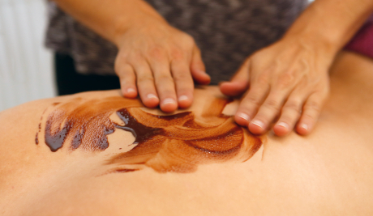

Angebot
Winter-Spezial
25,- pro 30 MinutenSchokolade macht glücklich!!! Gönnen Sie sich das einmalige Erlebnis einer Schokoladenmassage. Dank der reichhaltigen und hochwertigen Kakao-Öle wird die strapazierte Winterhaut reichhaltig genährt und streichelzart. Außerdem setzt der Geruch der Schokolade Glückshormone frei, so dass Sie ohne schlechtes Gewissen und auf eine ganz neue Art schlemmen können.
Zeigen Sie dem Winterblues die rote Karte und vereinbaren Sie einen Termin für Ihre persönliche Auszeit zum Angebotspreis von 25,-pro 30 Minuten.
Termin anfragen